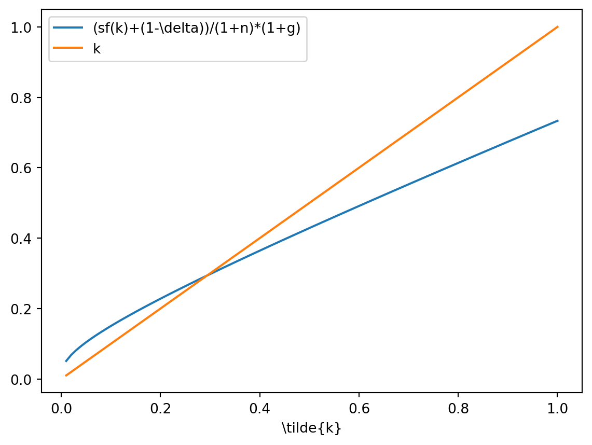
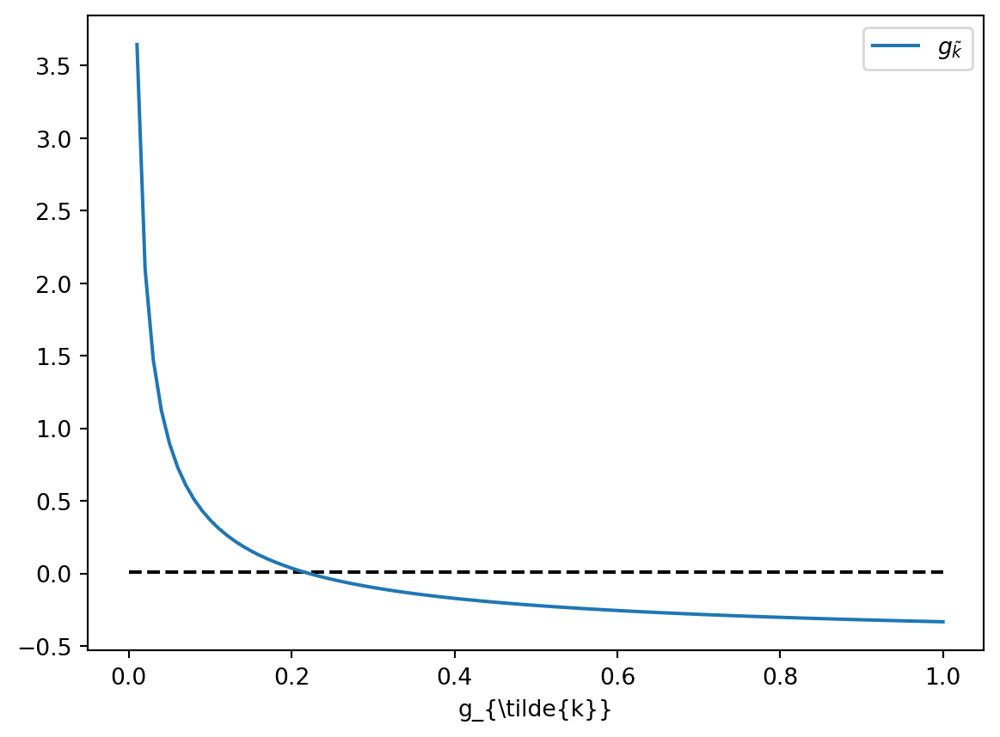

The Solow model constitutes a cornerstone in the growth analysis. Pre-solovian Growth Theory, turning mainly around Harrod and Domar contributions, concluded on the instability of long-run economic growth. Such conclusions were at odds at observed data. Although the Solow model has many pitfalls, it constitute a good starting point to discuss the structure of the many macroeconomic models that usually keep the same production structure.
The contributions of Solow takes place within a range of observations, called Kaldor’s stylized facts (after Kaldor, 1963). Namely:
GDP per capital grows over time
Per capital capital stock grows over time
Capital interest rate is roughly constant over long period
the capital-to-GDP ratio is roughly constant
Capital income and labor income share are roughly constant over long period
GDP per capita growth rates are different between countries
Note a consequence of point 5. is that, because the labor income share \(wL/Y\) is constant and that GDP per capita \(Y/L\) grows, the wage rate \(w\) has necessarily the same growth rate of the GDP per capita.
These stylized fact are the benchmark points to evaluate any model of economic growth. 1
In the rest of this chapter, we first discuss an important property of benchmark growth model. Afterwards, we describe and solve the Solow model in discrete time (the continuous time being studied in Appendix). We study the equilibrium growth rates and transitional dynamics and also discuss further topics such as the properties of factor prices, the Golden Rule of capital accumulation and growth accounting.
5.2 A general property: the balanced-growth path
Before starting with the presentation of the Solow model, we derive an important and useful property of any one-sector growth model provided it includes capital accumulation. This property, called the balanced growth path (or BGP), focuses on the equilibrium growth rates of aggregate quantities. We consider a simple economy characterized (for the moment) by two equations:
\[
K_{t+1}=I_t+(1-\delta)K_t
\tag{5.1}\]
\[
Y_t=C_t+I_t
\tag{5.2}\]
Equation (5.1) represents the capital accumulation equation2 while Equation (5.2) is the aggregate resource constraint of the economy. Variables \(K_t\), \(I_t\), \(C_t\) and \(Y_t\) the aggregate stock of capital installed at date \(t\) and investment realized at date \(t\), aggregate consumption at date \(t\) and GDP at date \(t\) respectively. The parameter \(\delta \in(0,1)\) represents depreciation of the capital stock at each period.
Definition 5.1 A balanced-growth path is a path \(\{Y_t,C_t,I_t,K_t \}_{t \geq 0}\) along which the quantities \(Y_t\), \(K_t\), and \(C_t\) are positive and growth at constant rates, which we denotes \(g_Y\), \(g_K\) and \(g_C\) respectively.
We can show then:
Proposition 5.1 Let \(\{Y_t,C_t,I_t,K_t \}_{t \geq 0}\) be a balanced-growth path. Then, given the capital accumulation equation and the aggregate resource constraint, the following holds:
If there is a BGP, then \(g_Y=g_K=g_C=g_I\) and the ratios \(K/Y\), \(C/Y\) and \(I/Y\) are constant.
if \(K/Y\) and \(C/Y\) are constant, then \(Y\), \(K\), \(C\) and \(I\) all grow at the same constant rate, i.e. there is a balanced-growth path with the additional property that all aggregate variables grow at the same growth rate.
Proof
For the first part of the proposition: by definition, \(g_Y\), \(g_C\), \(g_I\) and \(g_K\) are constant. Rewriting Equation (5.1):
\[
\frac{\Delta K_{t+1}}{K_t}=g_K=\frac{I_t}{K_t}-\delta \Leftrightarrow \frac{I_t}{K_t}=g_K+\delta
\] Since the right-hand side of this equation is constant, then the ratio \(I_t/K_t\) is constant and therefore \(I_t\) and \(K_t\) have the same growth rate (\(g_K=g_I\)). We can focus on the aggregate resource constraint:
\[
Y_t=C_t+I_t \Rightarrow \Delta Y_t=\Delta C_t+\Delta I_t \Rightarrow g_Y=\frac{\Delta Y_t}{Y_t}=\frac{C_t}{Y_t}g_C+\frac{I_t}{Y_t}g_I
\] Since \(\frac{I_t}{Y_t}=1-\frac{C_t}{Y_t}\) and \(g_I=g_K\), this equation becomes:
\[
g_Y=\frac{C_t}{Y_t}(g_C-g_K)+g_K
\] There are two possibilities: either \(g_C=g_K\), from which we directly derive that \(g_Y=g_K=g_C=g_I\) or \(g_K\neq g_C\) and the last equation rewrites:
\[
\frac{C_t}{Y_t}=\frac{g_Y-g_K}{g_C-g_K}
\] The right-hand side is constant, meaning that the ratio of \(C_t\) over \(Y_t\) is also constant, and therefore they grow at the same rate. Then, the RHS is equal to unity and therefore \(C_t=Y_t\) which contradicts the fact \(I_t>0\). Hence, \(g_C\neq g_K\) is not possible according to the definition of a BGP and implies that \(g_C=g_K=g_Y=g_I\).
To prove the second part of the proposition: Assume \(K/Y\) and \(C/Y\) are constant. Then, by definition, \(g_Y=g_K=g_C\) and therefore \(\frac{I_t}{Y_t}=1-\frac{C_t}{Y_t}\) meaning \(g_I=g_K\). To show that the growth rate is constant, we use Equation (5.1):
\[
g_k=\frac{I_t}{K_t}-\delta
\] where the right-hand side is constant.
This is a quite important result as it implies that there can’t be persistent deviations of aggregate quantities growth rate. Furthermore, this not only gives us a starting point to link theoretical quantities with observable but also regularities to reproduce or not given the structure we give to the model.
5.3 Assumptions
On the demand side, we consider that households are identical and follow a linear keynesian consumption function. In particular, we assume the aggregate consumption is \(C_t=(1-s)Y_t\) with the parameter \(s \in(0,1)\), the marginal propension to save. It follows that aggregate savings is given by: \(S_t=sY_t\). We also assume that households supply a fixed amount of labor.
Population \(N_t\) grows at a given and fixed rate \(n\) (so that labor supply continuously grows). The good \(Y\) can be either consumed or transformed into capital stock through investment. The production function \(Y_t=F(K_t,A_tLt)\) is homogeneous of degree 1 (i.e. linear homogeneity), satisfies Inada conditions, is increasing and concave in its arguments. \(L_t\) is labor used to produced \(Y_t\) while \(A_t\) represents exogenous technical progress and grows at an exogenous rate \(g\).3 Without loss of generality,[^we could indeed provide a full, but more complex, analysis just using the property given above.] we can assume a Cobb-Douglas production function \(Y_t=K_t^{\alpha}(A_t L_t)^{1-\alpha}\) where \(\alpha \in(0,1)\) is the output elasticity of capital (i.e. the percentage increase in output after a one-percent change in capital stock). Because of linear homogeneity, \(\alpha\) is also the capital income share (or the percentage capital income earned in the production process).
Important
Altough \(A_t\) is called “technical (or technological) progress”, keep in mind that this is a catch-up variable and does not capture only the technological level of a country. Indeed, a more agnostic interpretation would also include political stability, quality of institutions such as laws, patents and so on.
The economy is competitive (there is no market power or externalities). The model focus on a closed economy (no exporations or importations). There is no government intervention and the economy is at full employment such that \(L_t=N_t\). These assumptions are inoffensive to the main conclusions we’ll get thereafter.
5.4 Solving the model
The good market implies that \(S_t=I_t\) at each date. Hence, we may write:
\[
K_{t+1}=sY_t+(1-\delta)K_t
\tag{5.3}\]
Since \(C_t=Y_t-I_t=(1-s)Y_t\) and \(Y_t=F(K_t,A_tL_t)\) with \(A_t\) and \(L_t\) evolving exogenously, it is enough to use Equation (5.3) to describe the whole trajectory of the economy, although we cannot provide a solution of this equation. To do so, we need to rewrite ([-#eq-aggregate-equilibrium]) in effective labor unit. Denote GDP in effective labor \(\tilde{y}_t=\frac{Y_t}{A_tL_t}\) and effective labor capital stock \(\tilde{k}_t=\frac{K_t}{A_t L_t}\), then we can derive:
Equation (5.4) is the “fundemental Solow equation”, which is a non-linear first-order difference equation in \(\tilde{k}_t\). It displays two difference forces in the evolution of this variable. On the first hand, capital stock in terms of effective labor increases as households save (and therefore invest) more, that is the higher \(s\tilde{k}_t^{\alpha}\). On the other hand, at each period, the capital stock in terms of effective labor depletes because of physical depreciation (effect of \(\delta\)) but also because there are more people (\(L_t\) increasing at rate \(n\)) and that workers are more efficient (\(A_t\) increasing at rate \(g\)). 4 To say it differently, as there are more productive \(\frac{K_{t+1}}{A_{t+1}L_{t+1}}\) decreases. Hence, the economy requires to invest more to keep \(\tilde{k}_{t+1}\) higher.
We derive the steady state by putting \(\tilde{k}_{t+1}=\tilde{k}_t=\tilde{k}^*\) and solving Equation (5.4):5
import numpy as npimport matplotlib.pyplot as plts,alpha,delta,n,g=0.2,0.33,0.5,0.05,0.1k=np.linspace(0.01,1,100)def intensive_prod_func(kt,alpha):return kt**(alpha)LHS=(s*intensive_prod_func(k,alpha)+(1-delta)*k)/(1+n)*(1+g)plt.plot(k,LHS,label=r'(sf(k)+(1-\delta))/(1+n)*(1+g)')plt.plot(k,k,label='k' )plt.xlabel(r'\tilde{k}')plt.legend()plt.show()

Note that the steady state stock of capital in terms of effective labor is increasing with respect to the marginal propension to save \(s\) and is decreasing with respect to the depreciation rate, the population growth rate \(n\) and the technical progress growth rate \(g\). The remaining steady state variable of interest are:
Note that taking first-order approximation of Equation (5.4) in the neighborhood of the steady state implies that \(|\frac{d\tilde{k}_{t+1}}{d\tilde{k}_t}|<1\) and provides stability.
5.5 Growth rates
It is important to understand that by definition the growth rates of \(\tilde{k}_t\), \(\tilde{y}_t\) and \(\tilde{c}_t\) are zero when the economy reaches the steady state6. However, by definition of the variables in term of effective labor, we have:
Where \(k_t\), \(y_t\) and \(c_t\) are per capita capital stock, per capita GDP and per capita consumption.
Hence, as \(\tilde{k} \rightarrow \tilde{k}^*\), aggregate variable \(K_t\), \(Y_t\) and \(C_t\) grow at rate \(n+g\) while per capita variables \(k_t\), \(y_t\) and \(c_t\) grow at rate \(g\). Indeed for the aggregate GDP:7
It is easily verified (and automatically satisfy by the properties of the BGP) that \(K_t\) and \(C_t\) also grow at rate \(n+g\) and \(k_t\) and \(c_t\) grow at rate \(g\).
Now we can understand why the conclusions of Solow are important. As economists studying growth, we are interested into growth in per capita quantities. Assuming away technical progress (by putting \(g=0\)) implies that the per capita variable reach the steady state and stop to grow, which is at odd with what is observed in the data. Another way to say it, growth through an extensive process (increasing private inputs such as capital stock and labor, as hours of work or number of people working) cannot be a source of persistent growth. This is a direct consequence of marginal decreasing returns of capital: even in the favorable situation of linear homogeneity of the production (e.g. doubling all inputs doubles output), GDP per capita has decreasing returns in terms of stock of capital per capita meaning that any increase in \(k_t\) makes GDP larger but less and less. To explain persistent growth, this requires an additional variables which is exogenous in the model and takes the form of the catch-up variable \(A_t\), the so-called technological progress.
5.6 Transitional dynamics
We can use Equation (5.4) to study growth rate outside of the steady state. Rewrite it such that:
import numpy as npimport matplotlib.pyplot as pltg=np.zeros((100))gk=(s*k**(alpha-1)-(delta+n+g))/((1+n)*(1+g))plt.hlines(0.01,0,1,linestyles='--',colors='k')plt.plot(k,gk,label=r'$g_\tilde{k}$')plt.xlabel(r'\tilde{k}')plt.xlabel(r'g_{\tilde{k}}')plt.legend()plt.show()

Since the first term on the right hand side is decreasing in \(\tilde{k}_t\), for any \(\tilde{k}_t<\tilde{k}^*\), the growth rate of \(\tilde{k}, g_{\tilde{k}}\) is positive and decreases (and conversely for any \(\tilde{k}_t>\tilde{k}^*\)).
5.7 Behavior of the interest rate and the wage rate
Let us look at the firms’ profit maximization problem:
Equations in (7.1) show two different properties for factor prices. In particular, the interest rate depends only on the effective capital stock while the wage rate depends on both effective capital stock and (proportionaly) technical progress. As a result, when the economy reaches the steady state, the interest rate becomes constant while the wage rate grows at the same rate than the equilibrium growth rate of per capital GDP, capital stock and consumption.
5.8 The Golden Rule
We have seen that the steady state effective capital stock and consumption are given by:
For given parameters others than \(s\), we can note that the saving rate as contradictory effect on \(c^*\): one the first hand, a decrease in \(s\) increase the share of consumption given by \((1-s)\) but it also reduces the effective capital stock at the steady state, and therefore the amount produced. 8
The question is then: does it exist a saving rate that maximizes steady state consumption ? Regarding the previous paragraph, the answer is a definitive “yes” as shown below. Define \(c(s)=c^*(s)\) and \(k(s)=k^*(s)\) (that is recognize that steady state consumption and capital stock depends on the saving rate), then:
\[
c^{GR}: \max_{s} \{c(s)=k(s)^{\alpha} -(\delta+n+g)k(s)\}
\] which gives:
the Golden rule states that maximum steady state of consumption is obtained if the marginal product of capital is equal to the economic rate of depletion of capital stock \(\delta+n+g\). 9 One can show that the golden rule is generically not satisfied, unless \(s=\alpha\). If \(\alpha<s\) (respectively \(s<\alpha\)) then, the economy over-accumulates capital stock (\(k^*>k^{GR}\)) (respectively under-accumulate capital stock, \(k^{*}<k^{GR}\)).
Satisfying or not the golden rule is important as it has consequences on future cohorts of unborn yet people (and therefore intergenerational equity issues): too low savings means that current living households should increase the rate at which they are saving and accumulating capital while too high savings means we can at the same time increase consumption and capital accumulation. While the former characterizes under-accumulation of capital , the latter represents over-accumulation of capital. This can be summarized by the concept of dynamic efficiency.
Definition 5.2 Dynamic efficiency is a situation where an economy under-accumulates capital stock, that is \(k^*<k^{GR}\) while a dynamic inefficient economy over-accumulates capital stock, that is \(k^{*}>k^{GR}\).
5.9 Growth Accounting
Having achieved the analysis, we can use the structure of the model to measure the contributions of each factor to growth of the GDP per capita.
From the production function \(Y=K^{\alpha}(AL)^{1-\alpha}\), take logs and differentiate to get it in terms of growth rates:
\[
g_Y=\alpha g_K+(1-\alpha)(n+g) \\
g_Y-n=g_y=\alpha (g_K-n)+(1-\alpha)g
\] Note that we can easily find data describing growth rates of GDP per capita \(g_y\), capital stock \(g_K\) and demographic growth \(n\). Furthermore, \(\alpha\) is the capital income share and is around \(\alpha=0.3\). Hence, we can solve this relationship for \(g\) and plug in values:
Once you obtain estimated values of \(g\), let’s write \(\hat{g}\), then the contribution to growth of GDP per capita can be computed:
\[
g_y=\alpha(g_K-n)+(1-\alpha)\hat{g}
\] The first term on the RHS is the effect of capital stock per capita and contributes around one third to the growth rate of GDP per capita while the second term is the effect of productivity and contributes up to two-third of GDP per capita growth.
5.10 Appendix
5.10.1 Deriving the general production function for GDP per capita and effective labor GDP
Consider the general production function \(Y_t=F(K_t,A_tL_t)\). Since it has homogeneity of degree one, we can write:
The equation for aggregate capital accumulation is now:
\[
\dot{K}(t)=I(t)-\delta K(t)
\tag{5.6}\]
Demographic changes and technological change are given by:10
\[
\dot{L}(t)=nL(t), \quad \dot{A}(t)=g A(t)
\] and the production function is given by: \(Y(t)=K(t)^{\alpha}\left(A(t)L(t) \right)^{1-\alpha}\).
Households save a fraction \(s\in(0,1)\) of their income.
Using the good market equilibrium condition \(I(t)=S(t)\Rightarrow I(t)=sY(t)\) into Equation (5.6), we get:
\[
\dot{K}(t)=sY(t)-\delta K(t) =s K(t)^{\alpha}\left(A(t)L(t) \right)^{1-\alpha}-\delta K(t)
\] As in the discrete time version, we want to express the evolution of the capital stock in term of effective labor \(\dot{\tilde{k}}(t)\):
which implies that \(g_y=g_k=g\) using the BGP properties.
Note that some of these facts have evolved in recent years, in particular the stability of income shares. Furthermore, additional facts can be included. See the excellent chapter of Jones (2005) in the Handbook of Economic Growth.↩︎
In continuous time, this equation writes: \(\dot{K}(t)=I(t)-\delta K(t)\).↩︎
Introducing technical progress as we did is called “Harrod-neutral”. The two other for of technological progress are “Hick-Neutral” (\(Y_t=A_tF(K_t,L_t)\)) and “Solow-Neutral” (\(Y_t=F(A_tK_t,L_t)\)) but are not compatible with balanced-growth.↩︎
This can be seen as the RHS can be divided by \((1+n)(1+g)\).↩︎
Note that when developing \((1+n)(1+g)\), we considered that \(ng\approx 0\) because both are close to 0 enough.↩︎
This can be seen by dividing Equation (5.4) by \(\tilde{k}_t\) on both sides and noting that \(\frac{\tilde{k}_{t+1}}{\tilde{k}_t}=(1+g_{\tilde{k}})\).↩︎
Note that for any variable \(x_t\) that grows at variable \(g_x\) such that \(x_{t}=(1+g_x)x_{t-1} \Rightarrow ln(x_t)-ln(x_{t-1})=ln(1+g_x)\approx g_x\). We could also directly take the ratio \(Y_{t+1}/Y_t=1+g_Y=(1+n)(1+g) \approx 1+ n+g\).↩︎
Note that this is independent of considering population growth or growth technical progress.↩︎
In a more general setup, without specifying the production function \(f(k)\), the golden rule is given by: \(f'(k^{GR})= (\delta+n+g)\)↩︎
The solution of this exogenous process are respectively \(L(t)=e^{nt}\) and \(A(t)=e^{gt}\).↩︎